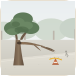

PUBLIC INCIDENT REGISTRY
Community Reports & Fixes
Open incident feed in Jakarta and surrounding urban regions. Public visitors may browse; sign in to interact.


 In review
In review
 Perumda PAM JAYA (Clean Drinking Water)
Perumda PAM JAYA (Clean Drinking Water)
PAM clean drinking water pipeline burst flooding sidewalk in front of Cipete Raya MRT

Jl. Fatmawati Raya No. 42 (depan Stasiun MRT Cipete Raya)
Water & Sewage
 148
148


 Assigned
Dinas Bina Marga DKI Jakarta (Roads & Sidewalks)
Assigned
Dinas Bina Marga DKI Jakarta (Roads & Sidewalks)
Severe 15cm asphalt cavity in TransJakarta corridor causing motorbike rim damage
Jl. Gatot Subroto Kav. 38 (depan Menara Mulia, Jalur TransJakarta)
Roads & Transit
92

 Resolved
Dinas Perhubungan DKI Jakarta (PJU & Traffic)
Resolved
Dinas Perhubungan DKI Jakarta (PJU & Traffic)
Complete PJU streetlight outage spanning 300 meters along residential corridor
Jl. Tebet Barat Dalam Raya No. 24, RT 08 / RW 03
Street Lighting
64
 In review
Dinas Lingkungan Hidup DKI Jakarta (Waste & Rivers)
In review
Dinas Lingkungan Hidup DKI Jakarta (Waste & Rivers)
Illegal household trash accumulation obstructing drainage at Kali Krukut Kemang
Kampung Kemang, RT 02 / RW 01 (bantara Kali Krukut)
Sanitation & Waste
78

Assigned
Dinas Pertamanan dan Hutan Kota DKI Jakarta
Hazardous decayed Trembesi tree limb at risk of collapse over walking path
Taman Suropati (sisi timur, dekat patung ASEAN)
Public Parks & Trees
45